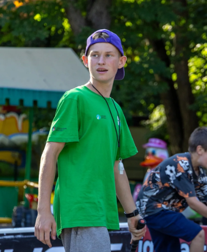

Вітаю на моєму персональному сайті

Тут ти можеш написати про себе. Наприклад: хто ти, чим займаєшся, твої хобі, навички або досягнення.Привіт! Мене звати Діма. Я активна та творча людина, яка завжди шукає нові ідеї та проекти. Люблю спорт, особливо флорбол, адже я маю свій клуб "Маяк Вінниця" і вже досягав високих результатів — чемпіон України та переможець Кубку Маяка. Окрім спорту, я цікавлюся технологіями та веб-розробкою, створюю сайти, презентації, редизайн та контент для соцмереж. Люблю експериментувати з дизайном, відеомонтажем та програмуванням на Python. У вільний час займаюся англійською мовою і вдосконалюю свої навички, щоб ставати кращим у всьому, що роблю. Мій підхід до життя простий: постійно навчатися, долати перешкоди та отримувати задоволення від процесу.
Чемпіон України з флорболу – сезони 2018/2019 та 2019/2020. Переможець Кубку Маяка – двічі здобував кубок зі своєю командою. Срібний призер Кубку Карпат – зайняв 2 місце на престижному турнірі. Засновник та тренер клубу “Маяк Вінниця” – створив команду та керую її розвитком. Контент-мейкер та веб-дизайнер – розробляю сайти, презентації та креативний контент для соцмереж.